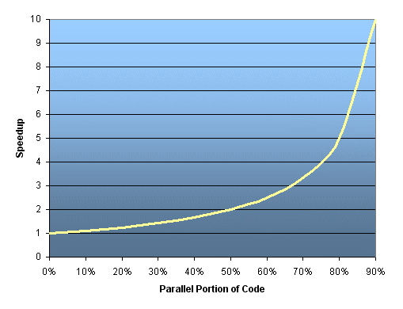
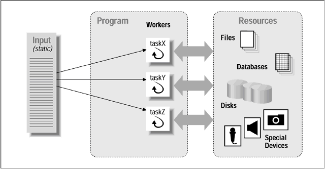

浅谈C++ multithreading programming
Table of Contents
Overview
随着多核CPU随处可见,多线程(multithreading)可以被用来实现并行,提高CPU的利用率和性能显著的提高.掌握多线程编程也成为现代实现软件的基本要求技能之一.Introduction to Parallel Computing详细的介绍了 Parallel Computing; 为什么使用它;Parallel Computing的分类;Parallel Computing的limits和 costs; Parallel Computing的程序模型;如何设计Parallel程序等.
这里先介绍多线程的概念,多线程中涉及的基本概念,然后用实例介绍Pthread库的使用,并介绍Google Code中如何把它封装成C++类,最后介绍可移植并大量使用的 Boost Thread库.
还有一些其他的Thread库:
- OpenMP 是一个可移植的接口,在共享内存的多处理器上实现fork-join并行. OpenMP的tutorial:这里 和 这里,
- OMNI Thread为C++提供Thread操作的.
- 其他multithreading libraries.
Thread
定义
A thread is defined as an independent stream of instructions that can be scheduled to run as such by the operating system.所以它是在程序中独立于其他代码可由操作系统调度的一段指令.
那么是操作系统是如何具体实现这一独立性呢?
要理解thread,必须先明白process.进程由操作系统创建来运行相应的程序,进程包含程序资源和程序执行状态的信息.以Linux的进程为例包含:
- Process ID, process group ID, user ID, and group ID
- Environment
- Working directory
- Program instructions
- Registers
- Stack
- Heap
- File descriptors
- Signal actions
- Shared libraries
- Inter-process communication tools (such as message queues, pipes, semaphores, or shared memory).
Thread使用Process的资源,并且能成为独立的元件被操作系统调度,是因为它仅重复那些使得它们能成为独立运行代码的必要资源.Thread维护它自己如下的信息:
- Stack pointer
- Registers
- Scheduling properties (such as policy or priority)
- Set of pending and blocked signals
- Thread specific data.
与Process比较,Thread可以总结如下:
- Thread相当于一个lightweight的Process,拥有如ID,properties等相似信息, 但仅仅包含能使得它独立运行的信息即可.
- 信息包含的不同,与需要复制大量信息来创建Process比,Thread的创建比较快捷.
- 独立的Processes不共享任何信息.每个Process运行在独立的地址空间.Threads共享所在Process的资源,全局变量和文件描述符.
- Threads可以直接与所在同一Process的Threads通信.而Processes必须使用 inter-process communication(IPC)来通信.
- 因为Threads的资源共享性,增加并行操作资源的难度,需要引入Thread同步机制来达到资源并行性.
一些术语
Posix Thread基本模型如下图,一些有关其中Thread的术语:

- Lightweight Process(LWP) 可以被认为虚拟的CPU,在系统中通常LWP的个数大于实际CPU个数.Thread库通过与LWP沟通来调度thread.LWP也通常被称为 kernel threads.
- Contention Scope 是如何决定哪个线程得到调度.
- Bound threads 拥有系统级别的Contention Scope,也就是,它们与其他进程一同竞争.
- Unbound threads 拥有进程级别的Contention Scope.
- Thread-safe 意味共享数据被得到保护,可以同时被多个thread调用而安全.
- Reentrant code 意味程序可以被多个thread并行运行.
- asynchronous-safe function 在signal handler下被安全调用并没有任何副作用.
- Concurrency vs. Parallelism 并不一样.Parallelism意味同时运行代码.而 Concurrency意味许多任务可以以任何顺序执行或可以是并行运行.
Amdahl法则和Pareto原则
Threads能提供益处 对于相适 的应用.所以thread的并行性对于应用来说也有它的限制.
- Amdahl法则
Amdahl法则 陈述到潜在的程序加速由能被并行的代码率P定义为:
\begin{equation} \begin{align} speedup = \dfrac{1}{1-P} \end{align} \end{equation}- 如果代码中没有能并行的部分,P=0,那么speedup=1.
- 如果所有代码都能并行,P=1,那么speedup能达到无限(理论上).
- 如果50%的代码能并行,那么最大的speedup=2,也就是最多2倍的加速.
引入能并行的处理器个数,那么进一步可以定义为:
\begin{equation} \begin{align} speedup = \dfrac{1}{\dfrac{P}{N} + (1-P)} 其中P并行率,N处理器个数 \end{align} \end{equation}

- Pareto原则
Pareto原则 陈述到80%的处理器时间花在20%的代码中.所以仔细分析代码,不要把时间花在并行/优化那部分不重要的代码.
Thread设计模式1
在程序中有不同的方法使用线程,这里讨论3种线程设计模式,没有哪一种模式最好,每种模式都有相应适合的应用场合.
Boss/worker(Thread pool)

如上图,一个Boss线程创建其他Worker线程,并给它们分配任务,必要的话,并等待其他线程运行结束.通常Boss线程会在初始建立Thread Pool来为之后分配.尽管线程是轻量级的,但是创建它们仍是有开销的.
Peer(Workcrew)

Peer模式又叫做workcrew模式,一个thread创建其他peer threads当程序开始,但是如上图,与Boss/worker模式不同,这个thread之后也变成peer thread去处理自己的任务.
Pipeline

Pipeline模式假定:
- 一串连续长输入.
- 每个输入经过一连串的子操作(熟知为stages或fliers).
- 每个处理stage能一次处理个不同的输入.
如上图, Pipeline就像流水线一般,每个thread是一个长链中的一部分.每个 thread处理由之前thread过的数据.
线程同步原语
如上线程中的定义,线程们共享进程中的全局变量或资源,它们可以并行同时对这些数据和资源操作,如果没有一定的机制协调它们,那么数据或资源将处于一个不安全状态,引起诸如如下的一些问题:
- Race condition发生于不能决定行为的结果因为线程们操作共享数据或资源没有遵循一定的同步规则.
- ABA problem发生于一个地方被读取两次,都读到相同的值,'值是相同的'被用来说明'没有东西被改变'.但是,另外一个线程能在这两次读取中间执行操作并修改这个位置的值,然后做一些其他操作,最后把这个值改回去,以致愚弄第一个线程让它认为'没有东西被改变',即使第二个线程的操作已经破坏了这个假设.
所以我们需要如下的一些线程同步原语满足不同的线程间同步需求.
Mutex
Mutex 又被称为Lock,所以它就像一把Lock,一个线程Lock住一段资源,那么其他线程就不能去访问那段资源,只有等到第一个线程Unlock那么资源,它才能访问.
在Lock和Unlock之间的代码,一般被称为 critical section.
Mutex也包含一些复杂的类型,如下:
- Recursive: 允许占有锁的那一个线程再次获取同样的锁,对递归算法是必要的.
- Queuing: 使得 公平 的获取锁,通过FIFO排序锁的请求.
- Reader/Writer(rwlock): 允许多个reader同时获取锁,如果有reader占用锁,writer只有等到reader释放锁.
- Scoped: RAII 类型定义的锁获取和解锁.
在Blog中之前浅谈Mutex (Lock)中可以看到更多有关Mutex的性能和开销分析,并如何实现一个轻量级的Mutex.
Join
Condition Variable
Barrier
Spinlock
Semaphore
Pthread
Overview
Thread Management
Mutex Variables
Condition Variables
Miscellaneous
POSIX Threads Library based; requires parallel coding Specified by the IEEE POSIX 1003.1c standard (1995). C Language only Commonly referred to as Pthreads. Most hardware vendors now offer Pthreads in addition to their proprietary threads implementations.
Very explicit parallelism; requires significant programmer attention to detail.
http://fanqiang.chinaunix.net/a4/b8/20010811/0905001105_b.html
http://www.tutorialspoint.com/cplusplus/cpp_multithreading.htm
http://softpixel.com/~cwright/programming/threads/threads.c.php
google wrap the pthread
Thread Debugging:
mutex
Handling mutexes in C++ http://home.roadrunner.com/~hinnant/mutexes/locking.html
Mutex, Lock, Condition Variable Rationale adds rationale for the design decisions made for mutexes, locks and condition variables.
http://www.open-std.org/jtc1/sc22/wg21/docs/papers/2007/n2406.html
boost thread libray
其他资料
Books:
- PThreads Programming and Its notes
- Anthony Williams’ blog and his book, C++ Concurrency in Action
- Herlihy & Shavit's The Art of Multiprocessor Programming
Online resources:
- Dmitriy V’jukov’s website and various forum discussions
- Bartosz Milewski’s blog
- Charles Bloom’s Threading Posts on his blog
- Doug Lea's The JSR-133 Cookbook for Compiler Writers
- memory-barriers.txt document
- Hans Boehm’s collection of links about the C++11 memory model
- Scott Meyers's Information on the C++11 Memory Model
- Herb Sutter’s Effective Concurrency series
- POSIX Standard: http://www.unix.org/version3/ieee_std.html
cc
Pthread Library Routines Reference
pthread_atfork
pthread_attr_destroy
pthread_attr_getdetachstate
pthread_attr_getguardsize
pthread_attr_getinheritsched
pthread_attr_getschedparam
pthread_attr_getschedpolicy
pthread_attr_getscope
pthread_attr_getstack
pthread_attr_getstackaddr
pthread_attr_getstacksize
pthread_attr_init
pthread_attr_setdetachstate
pthread_attr_setguardsize
pthread_attr_setinheritsched
pthread_attr_setschedparam
pthread_attr_setschedpolicy
pthread_attr_setscope
pthread_attr_setstack
pthread_attr_setstackaddr
pthread_attr_setstacksize
pthread_barrier_destroy
pthread_barrier_init
pthread_barrier_wait
pthread_barrierattr_destroy
pthread_barrierattr_getpshared
pthread_barrierattr_init
pthread_barrierattr_setpshared
pthread_cancel
pthread_cleanup_pop
pthread_cleanup_push
pthread_cond_broadcast
pthread_cond_destroy
pthread_cond_init
pthread_cond_signal
pthread_cond_timedwait
pthread_cond_wait
pthread_condattr_destroy
pthread_condattr_getclock
pthread_condattr_getpshared
pthread_condattr_init
pthread_condattr_setclock
pthread_condattr_setpshared
pthread_create
pthread_detach
pthread_equal
pthread_exit
pthread_getconcurrency
pthread_getcpuclockid
pthread_getschedparam
pthread_getspecific
pthread_join
pthread_key_create
pthread_key_delete
pthread_kill
pthread_mutex_destroy
pthread_mutex_getprioceiling
pthread_mutex_init
pthread_mutex_lock
pthread_mutex_setprioceiling
pthread_mutex_timedlock
pthread_mutex_trylock
pthread_mutex_unlock
pthread_mutexattr_destroy
pthread_mutexattr_getprioceiling
pthread_mutexattr_getprotocol
pthread_mutexattr_getpshared
pthread_mutexattr_gettype
pthread_mutexattr_init
pthread_mutexattr_setprioceiling
pthread_mutexattr_setprotocol
pthread_mutexattr_setpshared
pthread_mutexattr_settype
pthread_once
pthread_rwlock_destroy
pthread_rwlock_init
pthread_rwlock_rdlock
pthread_rwlock_timedrdlock
pthread_rwlock_timedwrlock
pthread_rwlock_tryrdlock
pthread_rwlock_trywrlock
pthread_rwlock_unlock
pthread_rwlock_wrlock
pthread_rwlockattr_destroy
pthread_rwlockattr_getpshared
pthread_rwlockattr_init
pthread_rwlockattr_setpshared
pthread_self
pthread_setcancelstate
pthread_setcanceltype
pthread_setconcurrency
pthread_setschedparam
pthread_setschedprio
pthread_setspecific
pthread_sigmask
pthread_spin_destroy
pthread_spin_init
pthread_spin_lock
pthread_spin_trylock
pthread_spin_unlock
pthread_testcancel